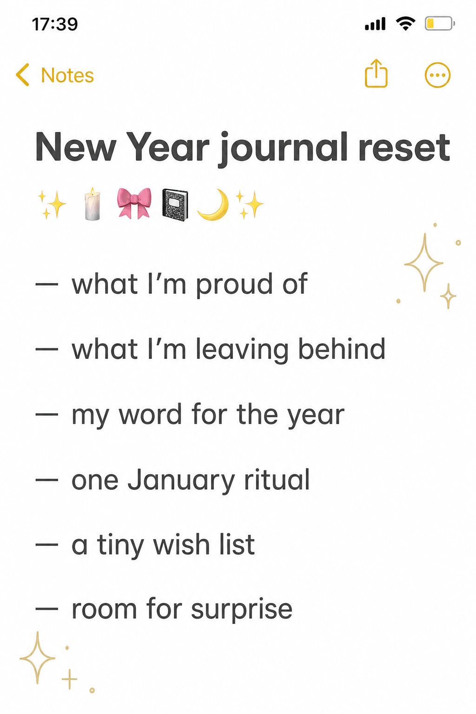

A New Year page does not need a perfect vision board, twelve goals, or a new personality. The most useful reset is often a small record of what you want to carry forward—and what can stay behind.

Start with evidence, not ambition
Write one specific thing you are proud of from the year that ended: a conversation handled with care, a habit you returned to, or a difficult week you survived. Evidence gives the page emotional weight and keeps the reset from becoming a list of ways to improve yourself.
Release one pressure
Name a rule you no longer want to obey. Cross it out once, but leave it visible. Then choose a yearly word that suggests an action: “notice,” “tend,” or “play.” Add one tiny January ritual that makes the word real.
Leave room for surprise
Finish with a short wish list and one deliberately blank line. That opening tells you the year is allowed to change. Date the page, but resist decorating every corner; a quiet beginning needs somewhere to breathe.
Visuals in this article were created with AI assistance and art-directed for Sentimentalica.
Find more reflective ideas in the Sentimentalica journal archive.